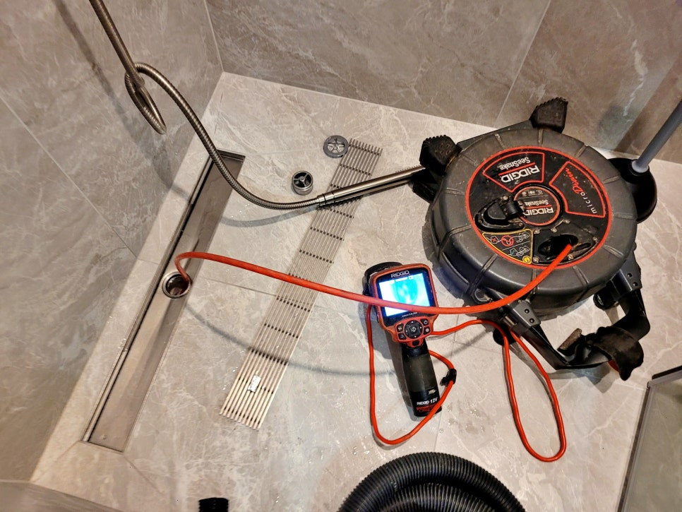
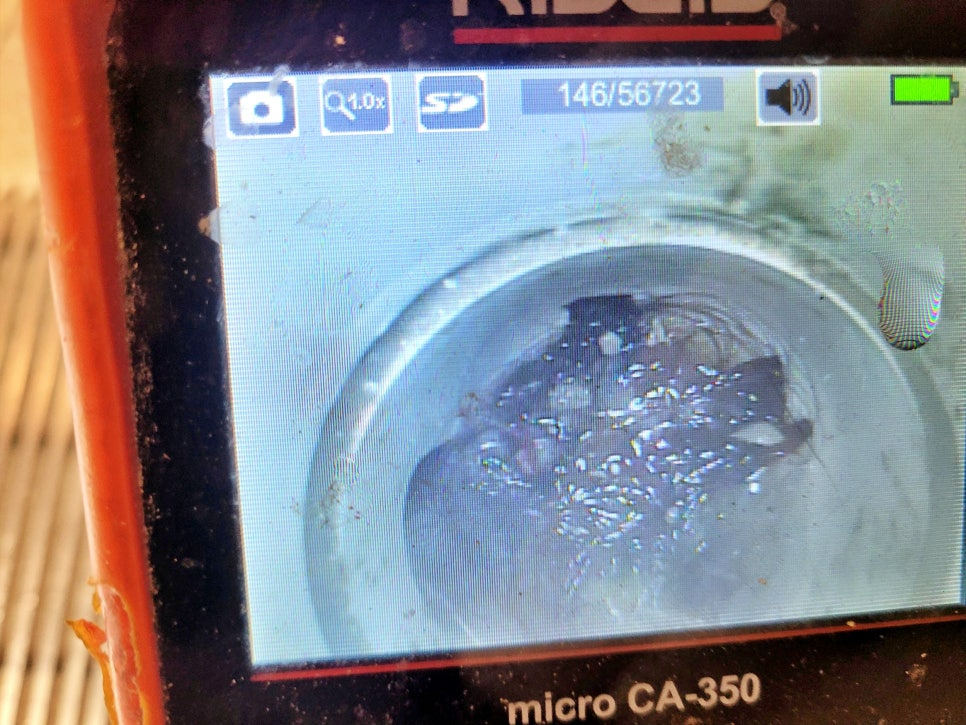
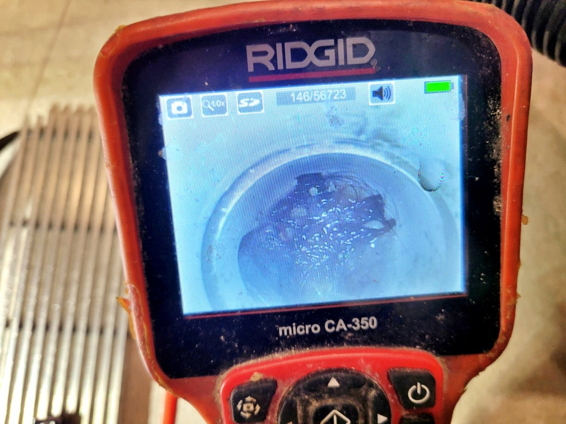
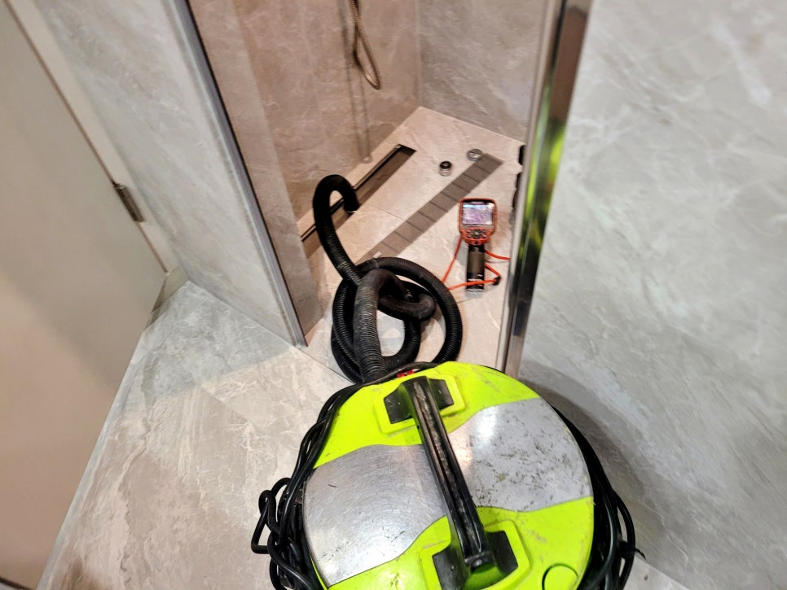
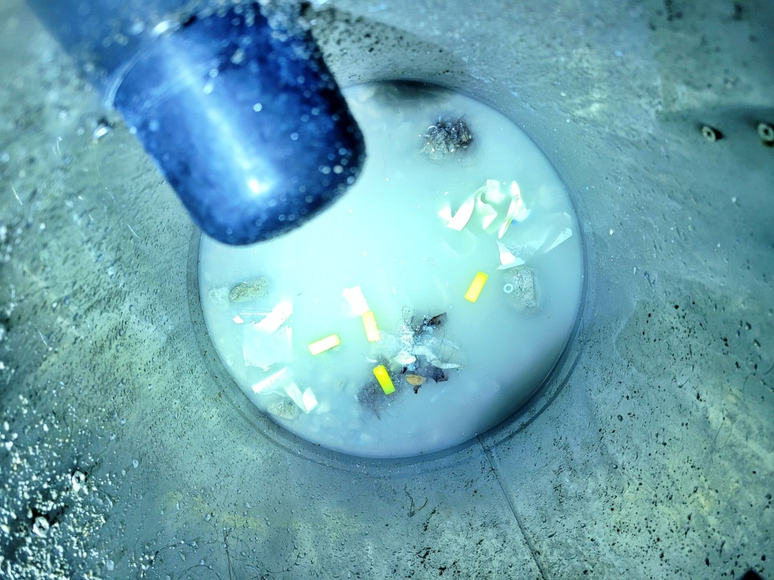
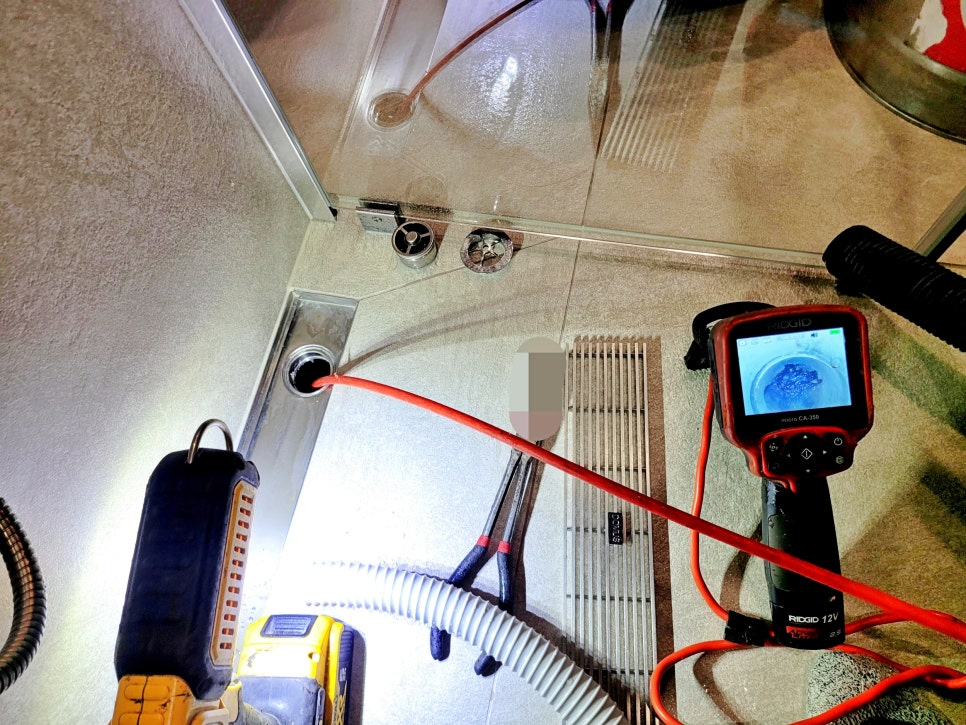

🏠 분당 판교 욕실 하수구막힘, 역류 인테리어 공사 후 꼭 확인하세요
용인 하수구막힘 전문 시공 후기

📋 작업 개요
- 위치: 용인
- 서비스 유형: 하수구막힘, 배관막힘, 누수수리, 역류해결, 뚫는업체, 배관청소, 설비공사, 배관보수
- 작업 일시: 2026. 2. 21. 11:52
- 업체명: 하수구수사대 (010-5615-2118)
🔍 문제 상황
분당 판교 욕실 하수구막힘 역류
인테리어 공사 후 꼭 확인하시고
A/S 받으세요.!!
환영합니다.
청소전문 하수구수사대입니다.
오늘 저희가 준비한 시공 후기는
판교의 한 아파트에서 욕실 바닥
하수구막힘으로 역류가 발생해
출동해 해결한 사례입니다.
참고로 판교 욕실하수구막힘 역류
현장은 인테리어 공사를 마친 지
한 달밖에 되지 않은 시점이었는데
샤워기 물을 틀면 바닥 배수구 위로
역류하는 문제가 발생한 것입니다.
그럼 이번 현장은 리모델링 공사와
어떤 연관이 있었는지 지금 바로
살펴보겠습니다.
1. 분당 판교 욕실 하수구막힘 원인은?
하수구 내부에 이물질로 막힘 모습
현장에 도착해 배수 상태를 직접
확인해 보니 물이 천천히 빠지다가
일정 수위 이상이 되면 역류하는
상황이었는데요. 단순한 머리카락
막힘과는 양상이 약간 달랐습니다.
판교 욕실 하수구막힘 내시경 점검 과정

🔎 원인 분석
💡 전문가 진단: 분당 판교 욕실 하수구막힘 역류인테리어 공사 후 꼭 확인하시고A/S 받으세요.!!
판교 욕실 하수구막힘 역류 원인
파악을 위해 내시경 카메라를
투입했는데요. 화면 속에서는
몰탈 조각과 타일 파편, 비닐과
각종 공사 부속물로 막혀 있었죠.
욕실 하수구막힘 석션 작업 과정
분당 판교 욕실 하수구막힘 원인은
인테리어 공사 과정에서 배수구
입구를 완전히 밀폐하지 않은 채
타일 작업과 철거가 진행되면서
발생한 것으로
석션 장비로 제거된 공사 부속물들
다행히
이물질이 메인 배관까지 깊숙이
이동해 굳기 전이라서 고성능
석션 장비로 흡입을 진행했으며
특수 갈고리 장비로 덩어리진
잔재물을 파쇄하며 제거 작업을
병행했습니다.
1차 제거 작업 후 다시 한번 내시경
카메라로 배관 내부를 확인했는데요.
하수구막힘 배관 내부에서 나온 쓰레기들
벽면에 붙어 있는 몰탈 잔여물과
여러 종류의 쓰레기들이 발견돼
석션 장비로 다시 한번 흡입해

🔧 작업 과정
제거했으며
고객님께서는 이 전과정을 직접
촬영하셔서 인테리어 공사 업체에
전달했으며 모든 비용 처리를 보전
받기로 하셨습니다.
판교 욕실 하수구막힘 역류 현장과
같이 인테리어 공사 후에 발생하는
배관 막힘이나 누수는 대부분 시공
과정의 관리 소홀에서 비롯되는
경우가 많은데요.
사전에 다음과 같이 몇 가지만
점검해도 충분히 예방할 수 있습니다.
첫째, 타일 작업이나 철거 시
배수구가 테이프로 확실하게
밀폐되어 있는지 수시로
확인해야 합니다.
둘째, 공사 직후에는 많은 양의
물을 흘려보내 배수 상태를 꼭
테스트해야 하는데요. 당장은
문제가 나타나지 않을 수 있기에
최소 한 달 정도는 역류나 누수가
없는지 세밀히 살펴야 합니다.
셋째, 하자 보수 기간 내에 배관
막힘이 발견된다면 초기에 자료를
준비해 시공 업체에 A/S를 명확히
요청해야 합니다.
그런데 여기서 주의해야 할 점이
한 가지가 있는데요.
판교 욕실하수구막힘 현장과 같은
문제가 발생 시 무리하게 약품을
붓거나 셀프 장비를 사용하면
이물질이 더 깊숙이 박혀 상황을
더욱 악화시킬 수 있기 때문에
이럴 때에는 꼭 하수구수사대와
같은 전문 청소 업체에 의뢰해
점검과 시공을 받아야 합니다.
2. 하수구막힘 시공을 마치며
판교 욕실 하수구막힘 역류 현장은
여러 차례의 내시경 카메라 점검과
석션 장비로 제거 작업을 진행한 후


✅ 작업 완료
배수 테스트를 진행해 시원하게
물이 내려가는 모습을 오랜 시간
고객님께 확인시켜 드렸는데요.
오늘 소개한 분당 하수구막힘과
같은 문제로 점검을 받고 싶다면
하수구수사대를 찾아 주십시오.
지금까지
"분당 판교 욕실 하수구막힘, 역류
인테리어 공사 후 꼭 확인하세요"
후기를 정독해 주셔서 감사합니다.
#분당판교하수구막힘전문 #분당하수구막힘 #분당하수구업체 #분당배관막힘청소업체 #판교하수구잘뚫는곳 #판교하수구청소업체 #판교하수구역류전문 #판교욕실바닥배수구막힘




⚠️ 베란다 누수 및 방수 관리 방법
- ✅ 비가 많이 올 때 창틀 주변이나 아래층 천장에 얼룩이 생기는지 정기적으로 확인해 보세요.
- ✅ 우수관 주변 실리콘 마감이 들뜨거나 깨진 틈새가 있는지 손상 여부를 수시로 체크하세요.
- ✅ 베란다 바닥 타일의 줄눈(메지)이 소실되면 그 틈으로 물이 침투하여 누수가 유발됩니다.
- ✅ 누수 의심 증상 발견 시 방치하면 아래층 손실이 커지므로 즉시 전문가의 진단을 받으십시오.
💡 핵심 정리
- 확실한 장비 작업(내시경 점검 및 샤프트 스케일링)으로 원인을 뿌리 뽑습니다.
- 작업 후 1년 이내에 동일한 부위 재발 시 100% 무상 A/S 서비스를 보장합니다.
- 서울 · 경기 · 인천 전 지역에 24시간 언제든 긴급 출동할 수 있도록 항시 대기 중입니다.
❓ 자주 묻는 질문 (FAQ)
🚨 용인 하수구막힘 문제로 고민이신가요?
정확한 원인 진단과 확실한 시공으로 재발 없는 해결을 약속드립니다.
24시간 긴급 출동 | 서울 · 경기 · 인천 전지역 | 1년 내 재발 시 무상 A/S